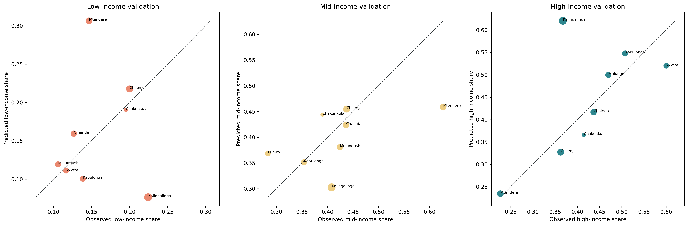

Additional full-size figures
These are all remaining figure files copied from the figure output folder.
Figure 1 Indicator Distributions

Figure 1 Osm Structural Indicator Distributions

Figure 3 Relationships Among Structural Scores

Figure 4 Determinants Of Wealth Score

Figure 4 Expanded Determinants Of Wealth Score

Figure 5 Income Probability Maps Evidence Aware2

Figure 5 Selected Osm Indicators By Income Group

Figure 6 Indicator Behaviour By Income Group

Figure 7 Aps Validation All Validation Wards

Figure 7 Aps Validation Curated Validation Wards

Figure 7A Wealth Score Vs Raster Population Density

Figure 7B Income Probabilities By Population Density Quintile